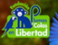
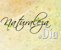

Desarrollo
Ozono
Jazz nace en enero de 2005 en San Antonio de los Altos,
por la iniciativa de hacer un grupo entre dos viejos
amigos, Emilio junto al bajista Humberto Ike Lizardo del
grupo legendario con su hermano PTT Lizardo La Misma
Gente. La intención fue dedicar la actividad
musical a la protección del ambiente. Este género de
música se bautizó "música ecológica". Ozono ha mantenido
una actividad intensa y creciente de ensayos y
conciertos hasta la actualidad, consolidando una banda
integrada por los aportes heterogéneos de sus
integrantes y por su alto nivel musical y creativo como
intérpretes en vivo.
Función
Con
Ozono Jazz llevamos a cabo activismo ecológico a través
de nuestra música, especialmente para proteger el Sonido
de la Tierra así como denunciar las “tragedias negras”
de la industria petrolera. Realizamos donaciones en
dinero y promoción a organizaciones que ayudan al
cuidado del ambiente. Ozono principalmente recauda
fondos a
través de sus actividades musicales y ventas de
materiales de promoción para hacer donaciones a sociedades ecológicas
de Venezuela. En sus presentaciones fomenta la
consciencia del silencio, reciclaje, ahorro, respeto, de
la generosidad y el cuidado del entorno de un país tan
hermoso como es Venezuela, que estamos destruyendo. A
diferencia de la función característica de la industria
musical en su objetivo de producir lucro y fama tanto
para los artistas como para los productores y dueños,
Ozono optó por utilizar este sector de nuestra sociedad
de consumo para colaborar con agrupaciones ecológicas
que tienen muy poco apoyo financiero en el país. Se ha
concentrado desde el 2012 en proteger el Sonido de la
Tierra al tratar de reducir el ruido humano que afecta
nuestro entorno sonoro a través de la campaña "Playas
sin Bulla", y desde el 27 de abril, 2016, Día Mundial
del Ruido, en lograr la enmienda de nuestra Constitución
(1999) para incluir en el Artículo 127 la protección del
entorno sonoro natural, que lamentablemente fue omitido.
Para más detalles, ver más abajo.
¿Música Verde?
Los
temas musicales del primer disco NATURA
fueron concebidos para expresar los pequeños y grandes
elementos de la vida en nuestro planeta: el sol, la
inmensidad del silencio y oscuridad del universo, el
espacio, aire y nubes, el viento, agua, fuego y energía,
la tierra, los seres y su progreso, la vida y el tiempo
eterno. Coincide esta serie de elementos con la alabanza
a la naturaleza y a su Creador expresada en "El Cántico
de las Criaturas" por San Francisco de Asís, escrito en
1225. Ozono concluyó al final del 2019 su tercer disco Guarapiche
Blues. Ozono Jazz realiza
presentaciones musicales en vivo, que pueden incluir a
un artista visual, así como bailarinas de danza
contemporánea.
Estilo
Su
música fusiona expresiones sonoras tan diversas como la
música africana occidental, música del Norte de la
India, rock, jazz y especialmente el folklore venezolano
en la utilización del joropo dentro de un contexto
urbano y mestizo: el joroponovo.
Incluye instrumentos indígenas de Venezuela, un tablã y
un sitar de la India. El resultado original es fruto de
un trabajo meticuloso de composición, con variedad en el
mestizaje de estilos, técnicas y ámbitos de la música,
con la creación y dirección de Emilio Mendoza,
galardonado con el Premio Internacional de Composición
Gaudeamus de los Países Bajos y el Premio Nacional de
Composición en Venezuela, entre otros.
Su
estilo musical se basa en la guitarra clásica como voz
principal en las composiciones, una evolución del legado
tan importante que nos dejó Antonio Lauro, con la
incorporación novedosa de la técnica del "jalao"
proveniente del joropo de la Bandola Llanera de Barinas.
Se le añade un toque de rock-folk al incluir la guitarra
de metal de 12 cuerdas en sustitución del Cuatro, en
manos del guitarrista y cantautor Juan
Lizardo, en el 2019 sustituido por Pedro Ceu,
debido a que Juan emigró a la República Dominicana. Tres
músicos profesionales del más alto nivel en la escena
nacional completan la agrupación con el instrumental
"moderno": El saxofón de Francisco
Issa, Manuel Churión en
el bajo eléctrico y la batería de Ómer
Pérez. Otro crossover se logra entre los
ambientes de música clásica y pop al incluir a la
soprano lírica, Marcy Durán,
con una belleza extraordinaria de timbre vocal. El
espíritu venezolano de Ozono, con esta proposición del
“joroponovo”, es consolidada a través del virtuoso de
las maracas, el antropólogo y especialista en música
indígena, Dr. Lizardo Domínguez.
Fète de la Musique 30a. ed., Caracas (18-06-2011),
con Lizardo, Marcy, Emilio y Álvaro Pardey
"Capítulo IX.CAMPAÑAS ANTERIORES
De los derechos ambientales.
Artículo 127. ...Es una obligación fundamental del Estado, con la activa participación de la sociedad, garantizar que la población se desenvuelva en un ambiente libre de contaminación, en donde el aire, el agua, los suelos, las costas, el entorno sonoro natural, el clima, la capa de ozono, las especies vivas, sean especialmente protegidos, de conformidad con la ley."
Considerandos
Artículo "En Torno al Silencio", de Emilio Mendoza.
Carta de solicitud a la Comisión de Ambiente, AN.
Carta al Alcalde del Municipio Los Salias - plástico y ruido.
'Basura genera fondos'
Concierto en el Jardín Ecológico Jeca, Concha Acústica, Colinas de Bello Monte, Caracas, 29/05/2016
Donaciones realizadas
• VerdelaTierra de Caracas, es una asociación civil sin fines de lucro dedicada a la formación, innovación, sensibilización y consultoría en buenas prácticas ambientales.
Carta de Agradecimiento.
• Maternatura ONG de San Antonio de los Altos, que se concentra en el reciclaje y el tratamiento del agua.
Carta de agradecimiento.
• Fundación Todoverde de Choroní, dedicada a la limpieza de nuestras bellas playas y a crear consciencia.
• Fundación Plumas y Colas en Libertad (FUNPLYCEL) de Caracas, dedicada a la conservación de nuestras especies silvestres más amenazadas por su captura para el tráfico ilegal y comercio de mascotas, y la creación de un Centro de Rehabilitación y Reintroducción de Fauna Silvestre.
Carta de agradecimiento.

• Naturaleza al Día, micros ecológicos para televisión por Dayana Frías, a los cuales Ozono Jazz donó su música para la serie de programas que salió al aire todos los martes entre 6:30 y 8:30 am, desde enero 2011, dentro del programa "Primera Página" por Globovisión, (ver un micro en Dailymotion. com).
Carta de agradecimiento. 
• Ozono Jazz ha ofrecido por más de diez años sus conciertos gratuitamente a muchas otras organizaciones ecológicas y culturales, dentro de sus propias actividades de foros, congresos, exposiciones y celebraciones: ver Conciertos.
Donaciones recibidas

{kind=link}
{kind=link}
{kind=link}